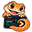
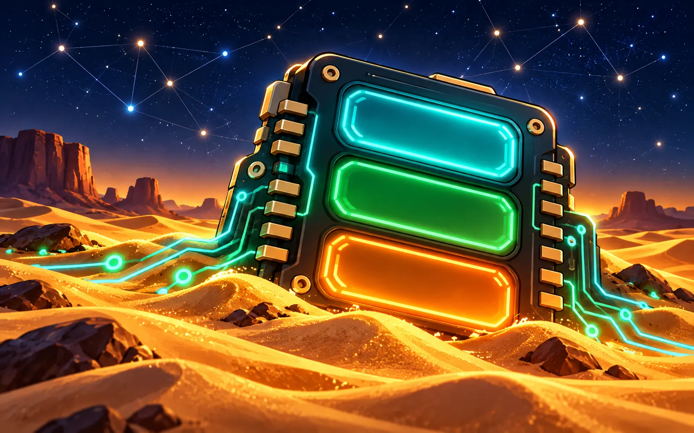
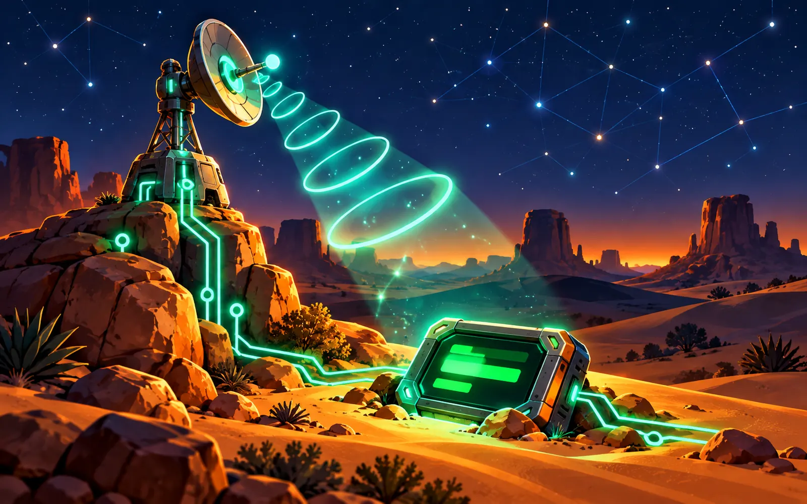

Backend .gekko/backends/ovms.toml
Where to send requests.
id = "ovms" type = "openai-compatible" base_url = "http://127.0.0.1:8000" [operations.chat] method = "POST" path = "/v3/chat/completions"

Gekkogko · a generic CLI engine for local AI
Declare a command in a Markdown file, point it at any OpenAI-compatible model server — OVMS on an Intel NPU, llama-server on Apple Silicon, anything that speaks the protocol — and it becomes a real subcommand. Adding, changing or removing one never requires recompiling.
gko config modelsNAME BACKEND OPERATION qwen-fast ovms chatgit diff --cached | gko commit-message
Quick start
A command names a model; a model names a backend and one of its operations. The command never needs to know which endpoint or protocol is involved. A repository can ship its own .gekko/ directory and get project-specific AI tooling without shipping any executable code.
.gekko/backends/ovms.tomlWhere to send requests.
id = "ovms" type = "openai-compatible" base_url = "http://127.0.0.1:8000" [operations.chat] method = "POST" path = "/v3/chat/completions"
.gekko/models/qwen-fast.tomlWhich model, on which backend operation.
id = "qwen-fast" backend = "ovms" operation = "chat" model = "qwen-2.5-1.5b" [generation] temperature = 0.0 max_tokens = 512
.gekko/commands/commit-message.mdThe command itself: TOML frontmatter between --- fences, and the prompt as the body.
---
description = "Generate a conventional commit message"
model = "qwen-fast"
[input]
mode = "stdin"
[output]
format = "text"
max_lines = 1
---
Generate a Conventional Commit message from the supplied diff.
Return exactly one commit message.
Do not use Markdown.
Do not explain your answer.
{{ input }}
The filename becomes the command name, so this is now a real subcommand: git diff --cached | gko commit-message. Nested directories become nested subcommands: commands/git/review.md gives you gko git review. Writing commands

Backends
A gecko sticks to any wall. gko speaks the OpenAI chat-completions protocol, so it sticks to any server that does.
optimum-cli, served by OpenVINO Model Server. Deploying on an Intel NPUllama-server on Metal. Running on Apple SiliconPOST /v1/chat/completions, or an equivalent path you configure.gko backend serve starts a backend's runtime — a container (type = "docker") or a plain local process (type = "process"). Switching family, image, ports or accelerator is a configuration change, not a rebuild.For programs and agents
gko is designed to be called by other programs, including coding agents. Exit codes are a contract, not an afterthought, and stdout carries the command result and nothing else: diagnostics go to stderr.
Run gko mcp serve as a stdio MCP server. It exposes each configured business command as a tool; built-ins are not tools. JSON commands also return structuredContent. MCP server
gko summarize README.md > summary.txt cat ticket.md | gko classify | jq . journalctl -u nginx --since -30min | gko analyze-logs
A malformed structured response is an execution failure, never something gko quietly repairs. Output contracts

Install
Grab a binary from the releases — Linux, macOS and Windows, x86_64 and aarch64 — put gko anywhere on your PATH, and later releases install in place with gko update. Or build from source with rustup:
git clone https://github.com/fmatsos/gekko.git gekko cd gekko cargo install --path .
Then check your setup: gko doctor validates your configuration, probes every configured backend and compiles every declared output schema — even when your configuration is invalid.
gko doctor